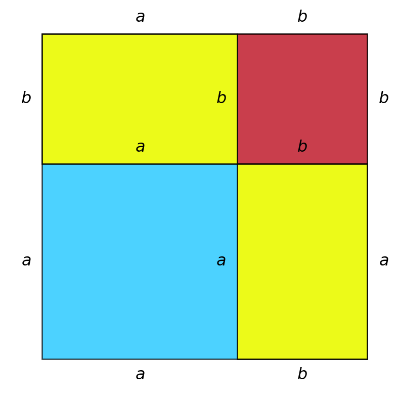
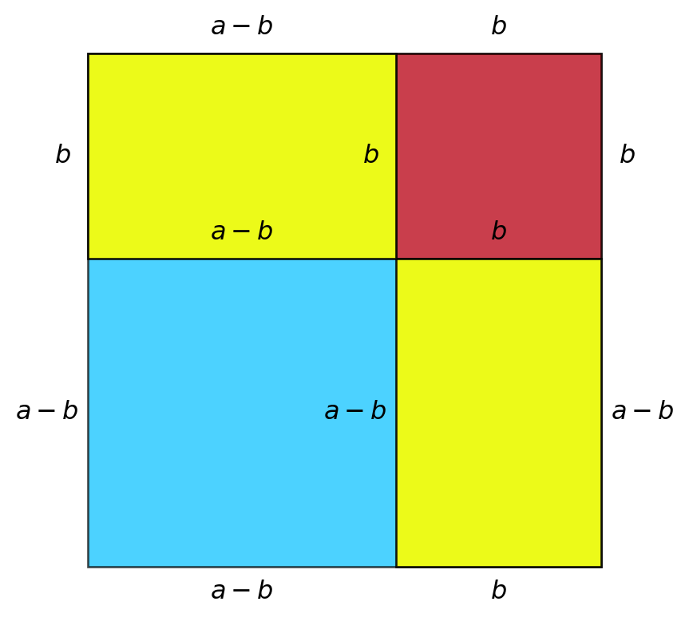
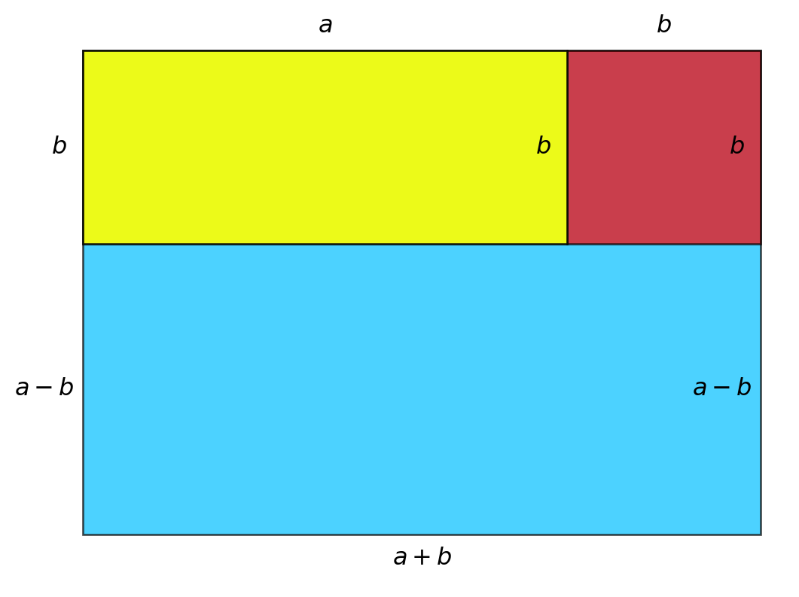

4 Kvadratsætningerne
Lad \(a\) og \(b\) være to (forskellige)\(^*\) tal. Da gælder følgende sætning
\(^*\) Der er ikke noget matematisk i vejen for, at de to tal, \(a\) og \(b\) er ens. To af kvadratsætningerne bliver i så tilfælde reduceret til \(0=0\), hvorfor der ingen grund er til at bruge kvadratsætningerne.
Bevis
Første hovedsætning \((a+b)^2 = a^2 + b^2 +2ab\)
Først kan vi regne det ud og skrive
\[ \begin{aligned} (a+b)^2 &= (a+b)(a+b) \\ & = a\cdot (a+b) + b \cdot (a+b) \\ & = a^2 + ab + ba + b^2 \\ & = a^2 + 2ab + b^2 && \text{fordi } ab = ba\\ & = a^2 + b^2 + 2ab \end{aligned} \]
Vi kan også vise det geometrisk ved at tegne nedenstående kvadrat.
Størrelsen af arealet af kvadratet ovenfor kan udtrykkes på to måder.
Den første er ved (den klassiske) højde gange bredde. Både højden og bredden er \(a+b\), så arealet er
\[ \text{Areal} = (a+b)^2 \]
Den anden måde er ved at lægge arealet af de to kvadrater tegnet med blå og rød sammen med de to rektangler, tegnet med rul, d.v.s
\[ \begin{aligned} \text{Areal} &= \text{blå kvadrat} + \text{rød kvadrat} + 2 \cdot \text{gul rektangel} \\ & = a \cdot a + b \cdot b + 2 \cdot a \cdot b \\ & = a^2+b^2 + 2ab \end{aligned} \]
Da figurens areal må være det samme, uanset hvordan vi finder frem til det, må der gælde, at \[ (a + b)^2 = a^2+b^2 + 2ab \]
Anden hovedsætning \((a-b)^2 = a^2 + b^2 -2ab\)
Som før kan vi begynde med at regne det ud og skrive
\[ \begin{aligned} (a-b)^2 &= (a-b)(a-b) && \text{husk at } a-b = a+(-b)\\ & = a\cdot (a+(-b)) +(-b) \cdot (a+(-b)) \\ & = a^2 + a \cdot (-b) + (-b) \cdot a + (-b)^2 \\ & = a^2 -ab - ba + b^2 && \text{fordi } (-b)^2=b^2 \\ & = a^2 - 2ab + b^2 && \text{husk (igen) at } -ab = -ba \\ & = a^2 + b^2 - 2ab \end{aligned} \] Det gemetriske Bevis er stort set det samme som for første hovedsætning. Vi laver samme figur, men bytter \(a\) ud med \(a-b\).

I dette tilfælde er hele kvadratets højde- og sidelængde lig \((a-b) + b = a-b+b = a\), d.v.s
\[ \text{Areal} = a^2 \]
Den anden måde er ved at lægge arealet af de to kvadrater tegnet med blå og rød sammen med de to rektangler, tegnet med rul, d.v.s
\[ \begin{aligned} \text{Areal} &= \text{blå kvadrat} + \text{rød kvadrat} + 2 \cdot \text{gul rektangel} \\ & = (a-b) \cdot (a-b) + b \cdot b + 2 \cdot (a-b) \cdot b \\ & = (a-b)^2+b^2 + 2ab - 2b^2 \\ & = (a-b)^2 - b^2 + 2ab \end{aligned} \]
Ligesom før må de to måder at udtrykke arealet på være ens. Se derfor kan vi skrive
\[ \begin{aligned} (a-b)^2 &- b^2 + 2ab = a^2 \\ (a-b)^2 &= a^2 + b^2 - 2ab \end{aligned} \]
Tjedje hovedsætning \((a+b)(a-b) = a^2 - b^2\)
Vi begynder igen først med en direkte udregning
\[ \begin{aligned} (a+b)(a-b) &= a \cdot (a + (-b)) + b \cdot (a+ (-b)) \\ &= a^2 - ab + ba +b \cdot (-b) \\ & = a^2 - b^2 \end{aligned} \] For at vise det geometrisk, tegner vi denne gang et rektangel med højdelængde \((a-b)+b=a\) og breddelængde \((a+b)\).

Som før er arealet af figuren først lig højde gange bredde, d.v.s
\[ \text{Areal} = a \cdot (a+b) = a^2 +ab \] Arealet er også lig summen det blå og det gule rektangel samt arealet af det røde kvadrat, d.v.s
\[ \begin{aligned} \text{Areal} &= \text{Blå rektangel} + \text{gul rektangel} + \text{rød kvadrat} \\ & = (a+b)(a-b) + ab + b^2 \end{aligned} \] Da de to måder at udtrykke arealet på, må der gælde, at
\[ \begin{aligned} (a+b)(a-b) + ab + b^2 &= a^2 + ab && ab\text{ på begge sider} \\ (a+b)(a-b) + b^2 &= a^2 \\ (a+b)(a-b) &= a^2 - b^2 \end{aligned} \] \(\square\)